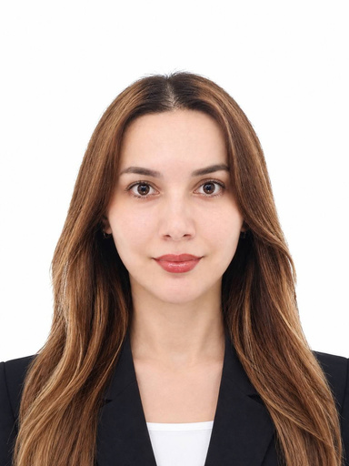

Korean ⇄ Uzbek translator and interpreter with an MA in Korean Language & Literature, completed PhD coursework in Education, and about 15 years connecting languages and cultures.

Korean–Uzbek professional translator and interpreter (Nizomova Guldona Fakhriddin qizi) holding an MA in Korean Language & Literature and having completed doctoral coursework in Education. About 15 years of experience in education, interpreting, translation, and cultural exchange — from classrooms and TOPIK courses to legal interpreting and support for foreign residents in Seoul. Native Uzbek, fluent Korean, intermediate English and Russian — connecting languages and cultures through accurate, clear communication.
About 15 years across teaching, interpreting, and translation in Uzbekistan and South Korea.
Run TOPIK exam-preparation classes and courses to raise learners' Korean proficiency.
Professional written translation of documents and oral interpreting between Korean and Uzbek.
Interpret between Korean and Uzbek for clients of a Korean law office.
Handled counseling and client support for foreign residents.
Taught Korean language classes to learners at a language institute.
Taught English to elementary school students.
Available for translation, interpreting, and Korean-teaching projects in Korea and remotely.
한국어 ⇄ 우즈베크어 전문 번역·통역가. 국어국문학 석사 학위를 취득하고 교육학 박사과정을 수료했으며, 약 15년간 언어와 문화를 이어 왔습니다.
한국어학 석사 학위를 취득하고 교육학과 박사 과정을 수료한 한국어–우즈베크어 전문 번역·통역가입니다. 약 15년간 교육, 통역, 번역 및 문화 교류 분야에서 경력을 쌓아 왔습니다. 우즈베크어(모국어)와 한국어에 능통하며, 영어와 러시아어는 중급 수준으로 구사합니다. 정확하고 명확한 소통으로 언어와 문화를 잇겠습니다.
우즈베키스탄과 대한민국에서 교육·통역·번역 분야 약 15년 활동.
TOPIK 시험 대비 수업 및 한국어 능력 향상을 위한 교육 진행.
한국어와 우즈베크어 간 전문적인 문서 번역 및 구두 통역 수행.
한국 법률사무소에서 한국어와 우즈베크어 통역 업무 수행.
외국인 주민 대상 상담 및 고객 응대 업무 수행.
어학원에서 한국어 교육 및 수업 진행.
초등학생 대상 영어 수업 진행.
한국 및 원격으로 번역, 통역, 한국어 교육 프로젝트를 진행할 수 있습니다.
Переводчик корейского ⇄ узбекского языков: магистр корейского языка и литературы, окончен курс докторантуры по педагогике, около 15 лет соединяет языки и культуры.
Профессиональный переводчик корейского и узбекского языков (Низомова Гулдона Фахриддин кизи): магистр корейского языка и литературы, окончен курс докторантуры по педагогике. Около 15 лет опыта в образовании, устном и письменном переводе и культурном обмене — от уроков и подготовки к TOPIK до юридического перевода и поддержки иностранных жителей Сеула. Узбекский — родной, корейский — свободно, английский и русский — средний уровень. Точная и ясная коммуникация, соединяющая языки и культуры.
Около 15 лет в преподавании, устном и письменном переводе в Узбекистане и Южной Корее.
Занятия по подготовке к экзамену TOPIK и повышению уровня корейского языка.
Письменный перевод документов и устный перевод между корейским и узбекским языками.
Устный перевод с корейского на узбекский и обратно для клиентов юридической фирмы.
Консультирование и работа с обращениями иностранных жителей.
Проведение занятий по корейскому языку в языковом центре.
Уроки английского языка для учеников начальной школы.
Доступна для проектов по переводу, устному переводу и преподаванию корейского в Корее и удалённо.